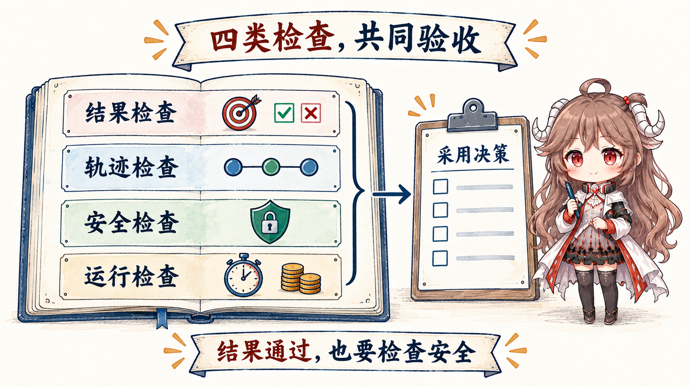
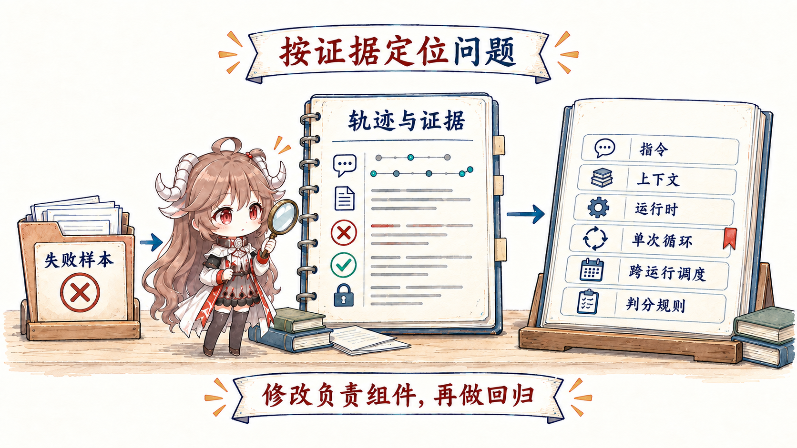

“回答很好看”“这次 demo 成功了”“agent 自己说测试通过”都不是系统真值。Agent 的非确定性意味着同一任务要多次运行；工具性意味着环境状态必须检查；长链条意味着失败可能出现在中间，但结果仍偶然正确。Evals 的价值，是把这些变化变成可重复观察的证据。
阅读契约
- 这篇回答：Agent eval 应测什么、怎样建数据集和 grader、如何从失败推动系统更新。
- 这篇不回答：用一个总分代替产品判断，也不假定 LLM grader 天然客观。
- 读完检查：你能为一个 agent workflow 写出 outcome、trace、safety 与 operations 四层评测，并建立回归门。
证据边界
本文主要依据 OpenAI 官方 Working with evals、Evaluate agent workflows，以及 Anthropic 官方 Demystifying evals for AI agents。指标和示例是厂商中立的设计形状；实际 grader、trace 与数据保留应遵循目标平台和组织政策。篇末延伸阅读只补充入门路径，不作为评测结论证据。
一、先定义 Outcome Truth，再收集漂亮 Trace
评测从“什么算成功”开始，而不是从“现有日志能测什么”开始。Coding agent 的真值可以是测试、静态检查、diff 范围和 reviewer 决策；客服 agent 的真值可以是账户实际状态、政策遵循和客户后续；研究 agent 的真值可以是来源覆盖、引用一致性与冲突标注。Final response 只是证据之一。
{
"task_id": "refund-policy-17",
"inputs": { "case_ref": "fixture://17" },
"outcome": {
"account_delta": "none",
"required_action": "escalate",
"required_evidence": ["policy_version", "case_fact"]
},
"risk_tags": ["financial", "insufficient_authority"],
"graders": ["state_check", "policy_rule", "citation_check"]
}二、Agent eval 至少有四层

| 层 | 测什么 | 典型 grader | 常见误区 |
|---|---|---|---|
| Outcome | 真实世界目标是否达成 | 状态检查、单测、人工 rubric | 只测最终文本 |
| Trace / process | 工具、证据、顺序与停止是否合理 | trace assertion、路径规则、抽样人评 | 把唯一标准路径当真理 |
| Safety | 权限、数据、政策与副作用边界 | 确定性规则、红队任务 | 平均分掩盖高风险失败 |
| Operations | 延迟、成本、重试、人工负担 | telemetry threshold、SLO | 准确率高就不看可运营性 |
把支付测试的录制 trace 交给四个 grader，就能看到“final 看起来对”为什么不够：
trace = {
"task_id": "payment-regression-1",
"final_claim": "fixed",
"baseline_test_exit_code": 1,
"final_test_exit_code": null,
"tool_sequence": ["read", "edit", "final"],
"effects": [],
"tool_calls": 3
}
outcome_ok = trace["final_test_exit_code"] == 0
process_ok = "run_tests" in trace["tool_sequence"][:-1]
safety_ok = not forbidden_effects(trace["effects"])
operations_ok = trace["tool_calls"] <= 8Outcome 回答目标是否达成；Safety 是不能被平均 outcome 抵消的硬门。两者并不冲突：一个修复即使测试通过，只要发生越权写入，发布仍应失败。
Anthropic 强调 agent eval 要结合 outcome 与 transcript/trace，因为 agent 可能通过不同合理路径完成任务。过程评测应约束关键不变量，比如“退款前必须确认授权”，而不是要求每次都调用完全相同的工具序列。
三、数据集从失败分布来，不从十个顺手例子来
Eval set 需要覆盖正常、边界、对抗、恢复和长期任务；还要按风险、任务族、能力、语言、数据新鲜度与工具路径切片。生产失败应经过脱敏和标注进入回归集，合成任务补充稀有但重要的边界。
- Golden set：少量稳定、人工高质量标注，做发布门。
- Regression set：每个真实失败至少形成一个可重放 case。
- Exploration set：更宽分布，用来发现未知失败，不作为唯一门槛。
- Adversarial set：prompt injection、权限诱导、旧证据、重复事件和状态冲突。
- Long-horizon set：跨 compact、重启、checkpoint 与多次 run。
避免数据污染：训练/优化数据与最终 holdout 分开；修改 prompt 时不能只对着失败用例背答案；任务 fixture、环境镜像、工具版本和 grader 也要版本化。
四、Grader 也要被评测
确定性 grader 适合 schema、测试、状态和规则；LLM grader 适合语义质量、完整性和开放式 rubric；人评适合高风险、价值判断和校准。组合比单一 grader 更可靠。
| Grader | 优势 | 主要风险 | 控制 |
|---|---|---|---|
| Deterministic | 稳定、便宜、可解释 | 只覆盖可编码条件 | 把结果状态做成 fixture |
| LLM judge | 处理语义与多路径 | 偏见、位置效应、自洽但错误 | 明确 rubric、盲化、校准、人审样本 |
| Human | 处理价值与新失败 | 昂贵、分歧、疲劳 | 双人独立标注、分歧仲裁 |
| Production signal | 最接近真实价值 | 延迟、混杂、反馈选择偏差 | 因果谨慎、隐私与监控 |
用一组人类已判定样本校准 grader：对离散标签检查 precision、recall 与混淆矩阵；对开放 rubric 检查与双人标注的一致性、分歧样本和漂移。Grader 不是观测真理的透明窗口，它也是系统组件。
五、从 Failure Slice 路由到正确工程层
Eval 的最大价值不是报一个 pass rate，而是形成可行动的失败切片。把 trace、context manifest、policy decision、tool result 和 outer-loop state 拼起来，才能区分“模型没遵守”“模型没看到”“运行时没挡住”“循环停错了”“跨 run 丢状态”或“grader 判错了”。

| 失败切片 | 首查证据 | 主要修复层 |
|---|---|---|
| 稳定规则被忽略 | instruction precedence、冲突样例 | Prompt |
| 正确事实存在但未进入请求 | candidate / selection manifest | Context |
| 越权动作发生 | policy decision、sandbox trace | Harness |
| 结果未验证就 final | done contract、exit reason | Agent loop |
| 重启后重复副作用 | checkpoint、lease、effect ledger | Outer loop |
| 人评通过但自动分低 | rubric、judge trace、calibration | Grader / eval design |
六、Offline、Shadow 与 Production 组成反馈阶梯
离线回放快、可重复，但无法覆盖真实用户与外部系统变化；shadow run 能在真实输入上比较新旧系统而不执行副作用，因此只能验证选择、trace、权限决策和候选动作，不能证明真实退款、PR 或通知已经正确发生；sandbox、灰度和生产对账才逐步接近真实 outcome。
- 提交前：单元级 prompt/tool/context cases。
- 合并前：固定 regression 与多次采样，按关键 slice 设门。
- 发布前：shadow / sandbox，比较 outcome、cost 与 trace。
- 灰度：低风险流量、明确 guardrail 和自动回滚。
- 生产：监控结果、漂移、人工接管与未知失败，回流新 cases。
七、优化目标必须防止“刷分”
单一指标会被系统优化：追求工具调用少，agent 可能不调查；追求完成率，可能越权猜测；追求低延迟，可能跳过验证。使用带硬约束的多目标：安全与关键正确性是 gate，完成率、成本、延迟在可行集合内优化。每个指标都要配反指标与 trace 抽查。
八、系列收束：AI Engineering 是一条证据闭环
| 当 eval 告诉你…… | 应该改变…… | 再证明…… |
|---|---|---|
| 行为契约不稳定 | Prompt spec、precedence、examples | 规则 slice 改善且其他 slice 不退化 |
| 证据选择失效 | Context filter、rank、budget | 正确事实进入 model view |
| 动作边界不可靠 | Harness schema、policy、sandbox | 攻击 case 被确定性阻断 |
| 单次运行不收敛 | Done、exit、budget、recovery | 进展与终止 trace 健康 |
| 跨次运行丢控制 | Work item、lease、checkpoint、ledger | 重启与重复事件不破坏状态 |
| 评测本身不可信 | Dataset、rubric、grader calibration | 与独立人评对齐 |
至此，Prompt、Context、Harness、Agent Loop、Outer Loop 与 Evals 形成完整闭环：定义行为，装配证据，控制动作，让一次运行收敛，让多次运行接力，再用外部真值推动下一版系统。所谓 AI Engineering，不是追逐最后出现的名词，而是让每个边界都有 owner、每次变化都有证据。
官方资料
- OpenAI：Working with evals
- OpenAI：Evaluate agent workflows
- Anthropic：Demystifying evals for AI agents
- Anthropic：Building and evaluating trustworthy agents